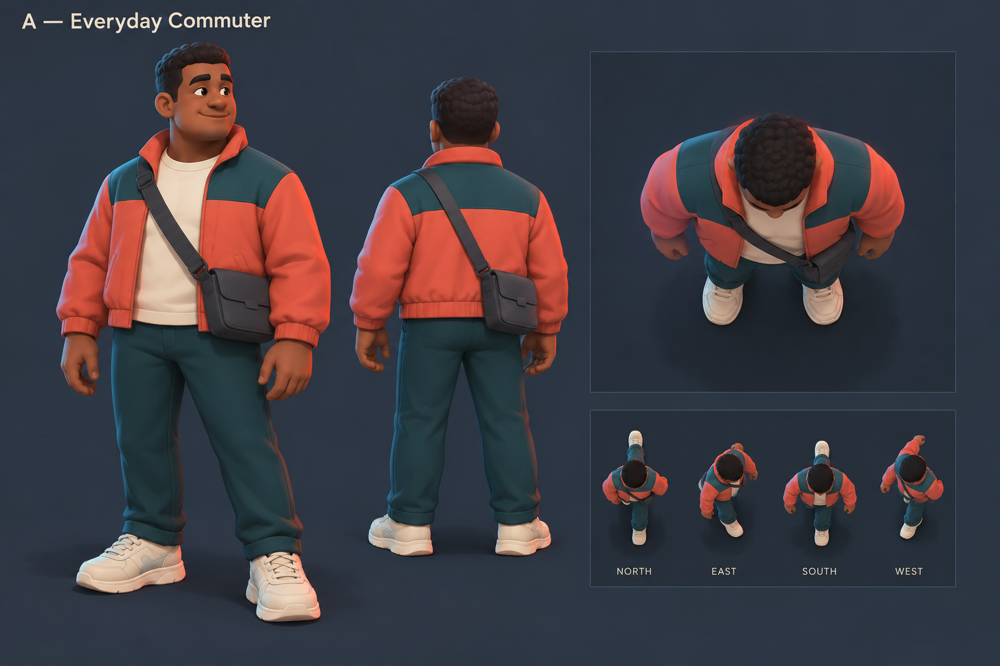
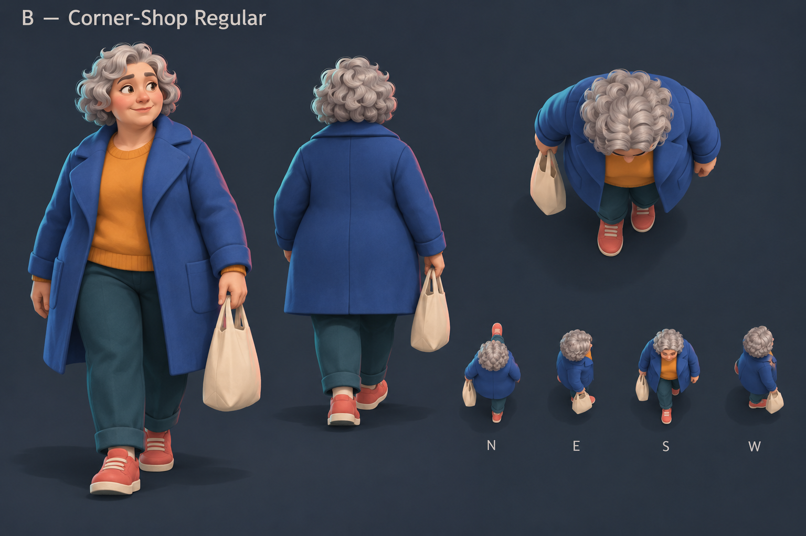
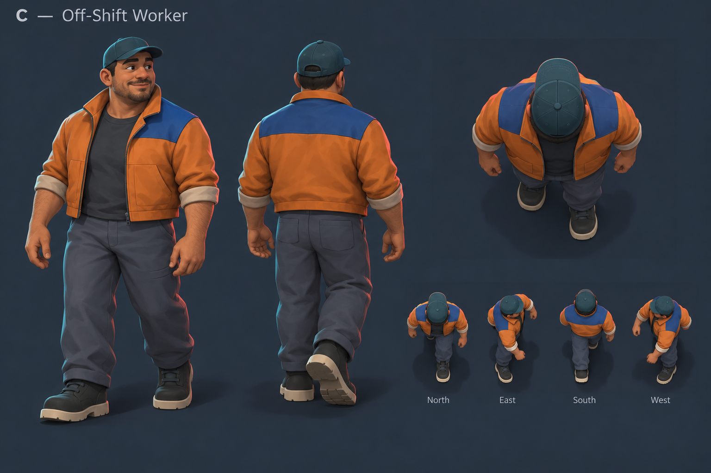

First civilian pedestrian
Three alternative directions. Awaiting Regner's selection before production modelling.
Recommendation: A — Everyday Commuter, for its simple short jacket and
hands-free silhouette.
Generated concept studies, not engine captures. Overhead shapes are enlarged;
compass labels in the walking strips are unreliable. Actual 47 m / 42° / 1280×800
north-up camera checks follow approval and Blender authoring. Final binding waits for
the player-owned shared rig.
A — Everyday Commuter · Recommended
Compact coral jacket, petrol yoke and small bag. Broad clothing masses; hands free.
Simplify curls, folds and shoe detail in production.

B — Corner-Shop Regular
Silver hair, longer cobalt coat and shopping tote. Distinct everyday shape;
coat, tote and overhead shoulder visibility need additional motion review.

C — Off-Shift Worker
Amber work jacket, cap and broader build. Clear head/facing cue;
shoulder shape must remain distinct from the selected player.

Original concepts produced with OpenAI built-in image_gen. No real brands.
Exact prompts · Image receipts.